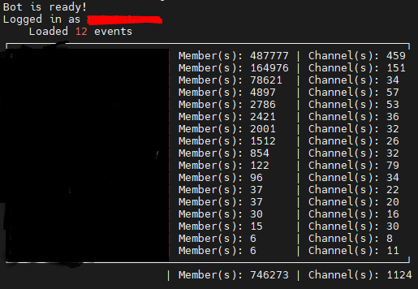

Network Python GUI

Network Python GUI is a graphical user interface built using Python programming language that allows users to interact with network-related applications or tools.
▼
Github Email Scraper

A tool or software that scans Github repositories for email addresses. The scraper searches for email addresses associated with the repository. This tool is useful for finding email addresses of people who have contributed to a project on Github.
▼
VPN
A VPN, or virtual private network, is a secure tunnel between two or more devices. VPNs are used to protect private web traffic from snooping, interference, and censorship. I am no expert in VPNs, so I will not be explaining how they work as an expert would.
▼
Discord Self-bot

This discord self-bot is a bot that runs on your account. It is against Discord's Terms of Service to use self-bots, so I do not recommend using this. But the proof of concept of making a bot live track the ISS on discord was a fun project as well as a learning experience. Handled the database with Enmap, and Json. The language I had used to create this was Javascript. This projects total lines of code is 6,537 lines.
▼
Spacedashboard Video Creator
Spacedashboard
This pulled the images from the Spacedashboard website and created a video with the provided. I am not sure on the exact time but every 15 minutes or so the images of the sun corona and the south, and north pole aurora images are updated. The script takes those images and in real time stitches the videos. Anyways, proof of concept was to see if I could make a video creator that would stitch images together in real time before the website updated the images.
▼
Created a website for a small Youtuber
Bursts Website
This was recoded off the same template that this website I am currently working on is using. The css and colors were changed to match the theme of the youtubers liking.
▼